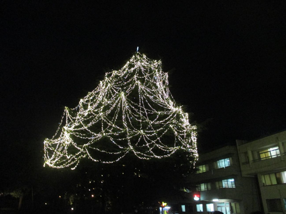

皆様いかがお過ごしですか？インフルエンザも流行ってまいりました。ここ最近をお知らせいたします。
いや～＾＾話しかけずらいっすね～＾＾全然話せないな～期待している皆様誠に申し訳ございません。
正直な気持ち今のままじゃダメっていうのはわかっているんですがね・・そんなことはさておき地域のコーナー！
昨日より長津田厚生病院にてツリーが登場しました。
その時の写真です。

皆さんも見に行ってみてはいかがでしょうか？
そして今回よりホームページが登場しました。
URLは
https://nagomi-tsushin.github.io/homepage/
メールアドレスに続き第二弾の物でございます。是非ご覧ください。
そしてなごみつうしんに校閲部が誕生しました！しかも校閲ガールもいますよ！
人事採用などはこちらへ⇒nagomituusin@gmail.com
最後はこんな感じになりましたがお許し下さい。
次回も見てね。ヨ・ロ・シ・ク